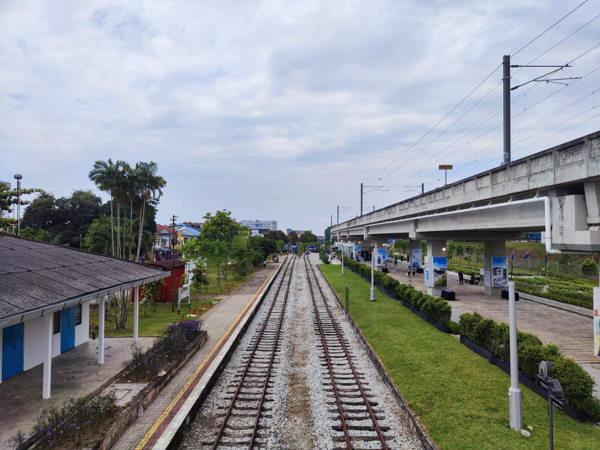
Kluang Heritage Railway Linear Park
Year
2020-2025
(on going)
(on going)
Type
Placemaking
Park / Architecture Installation
Park / Architecture Installation
Team
Tey Tat Sing
Wong Wei Ping
Gan Jing Wen
Lim Zhuan Yang
Alex Tan
Gue Yan Ting
Shun Li Sze
Teh Yong Peng
Wong Wei Ping
Gan Jing Wen
Lim Zhuan Yang
Alex Tan
Gue Yan Ting
Shun Li Sze
Teh Yong Peng
Location
Kluang
Collaboration
Think City
SD2
SD2
A Linear Park in coexistence with the Town Railway, and History.
Since 1913, the railway has been playing a vital role in the city’s transportation network. The city emerged and flourished along its linear alignment, growing in parallel with the railway itself. Yet from another perspective, the railway also divided the city into two.
Today, as the former railway is upgraded into an elevated viaduct, a new ground plane is released beneath it. This newly liberated space is envisioned to once again assume a critical role — stitching the town back together.
In response, a park within the new plane is conceived as a dialogue with the railway’s history and a space that coexists with urban life, weaving cultural memory and everyday rhythms into a more closely connected whole.
Since 1913, the railway has been playing a vital role in the city’s transportation network. The city emerged and flourished along its linear alignment, growing in parallel with the railway itself. Yet from another perspective, the railway also divided the city into two.
Today, as the former railway is upgraded into an elevated viaduct, a new ground plane is released beneath it. This newly liberated space is envisioned to once again assume a critical role — stitching the town back together.
In response, a park within the new plane is conceived as a dialogue with the railway’s history and a space that coexists with urban life, weaving cultural memory and everyday rhythms into a more closely connected whole.
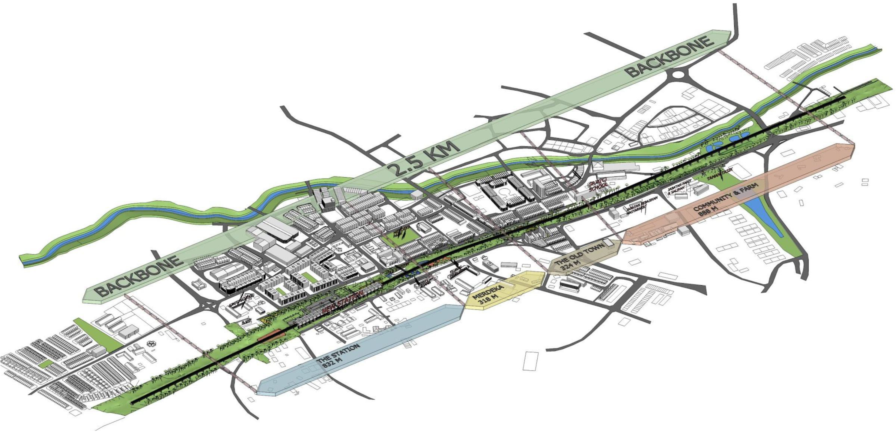
What happens when the railway is lifted from the ground onto a viaduct?
What new possibilities can emerge within the space beneath the viaduct?
The 2.9 km park masterplan encompasses the former railway alignment, a new elevated railway station (ETS Station), and a series of spaces extending beyond the track corridor. Responding to the surrounding urban context, the railway corridor is reimagined as a continuous 2.9 km looped pedestrian path, alongside a park space that recalls the former railway and the history of surrounding context.
The masterplan integrates activity spaces that support and promote everyday urban life, as well as safe and dedicated sports and recreation areas for students, directly connected to nearby schools.
The masterplan integrates activity spaces that support and promote everyday urban life, as well as safe and dedicated sports and recreation areas for students, directly connected to nearby schools.
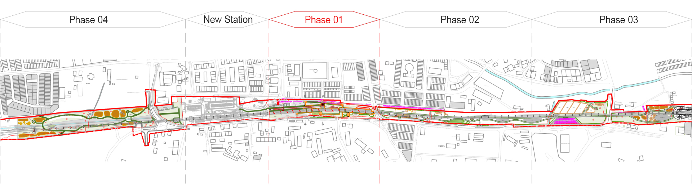
The railway park is planned in four development phases due to its complexity and viability.
Phase 1 Laman Rel Mahkota, which emphasizes railway heritage and everyday town life, has been completed and is now open to the public.
Subsequent phases are planned as part of future development with reference to its surrounding site context. All four phases is to be connected with a prevailing foot path mapped along the trace of century-old railtrack.
Phase 1 Laman Rel Mahkota, which emphasizes railway heritage and everyday town life, has been completed and is now open to the public.
Subsequent phases are planned as part of future development with reference to its surrounding site context. All four phases is to be connected with a prevailing foot path mapped along the trace of century-old railtrack.
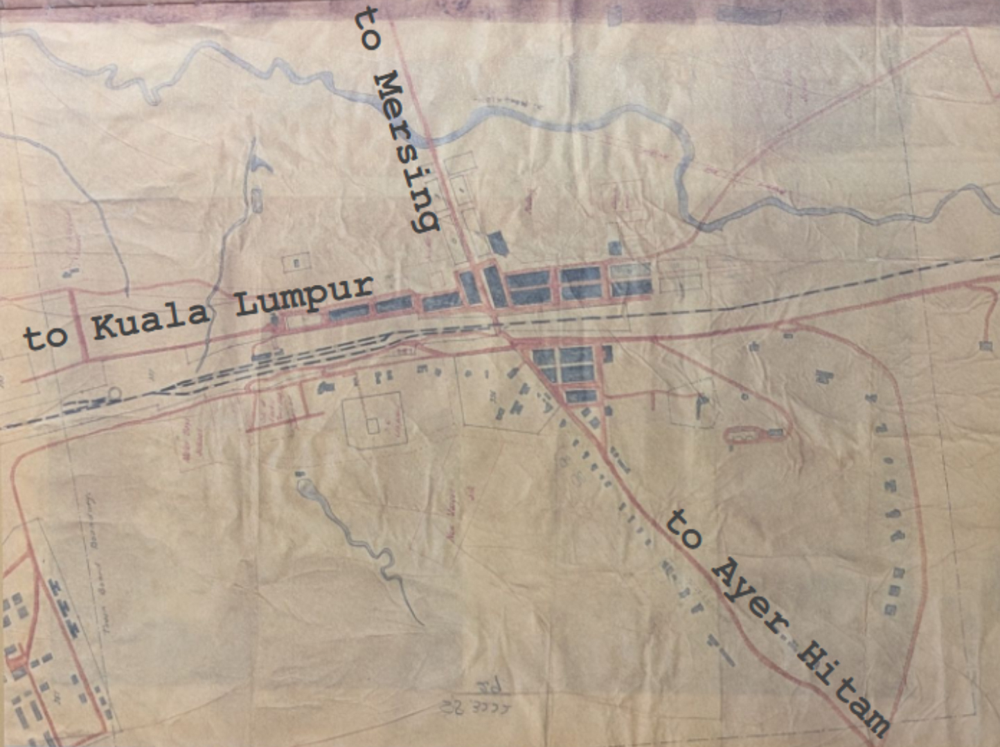
Plan of Kluang town 1936
Source : National Archives of Malaysia, Johor Branch
Accession number: PL263
Source : National Archives of Malaysia, Johor Branch
Accession number: PL263
Render Image
Kluang Heritage Railway Linear Park Phase 01 begins at the former Kluang Railway Station site, covering approximately 470 meters from the new Kluang Railway Station to Jalan Mersing. Focusing on integrating the former railway grounds and railway heritage with new community-oriented public spaces. Responding to the challenging terrain beneath the viaduct, the design establishes appropriate event platforms, leisure walkways, and various park amenities. The park features five accessible entry points, creating strong connections and interactions with the surrounding roads and neighborhood while also providing parking facilities. Additionally, two future access points have been reserved (currently unopened) allowing seamless integration with the upcoming phases of the Railway Park development.
Historical Railway Track
Historical railway track Historical railway track Historical railway track Historical railway track Historical railway track Historical railway track
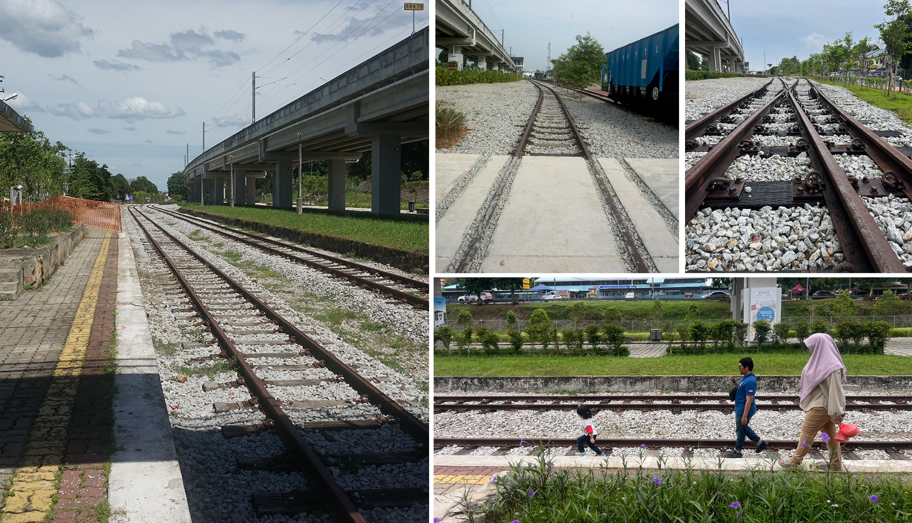
Railway Sleeper
Sleepers — an iconic element of railway heritage — are richly integrated throughout the park.
Concrete sleepers are transformed into event platforms, steps, amphitheatre and benches, while timber sleepers are reused as for trace of old rail tracks and road marker
Concrete sleepers are transformed into event platforms, steps, amphitheatre and benches, while timber sleepers are reused as for trace of old rail tracks and road marker
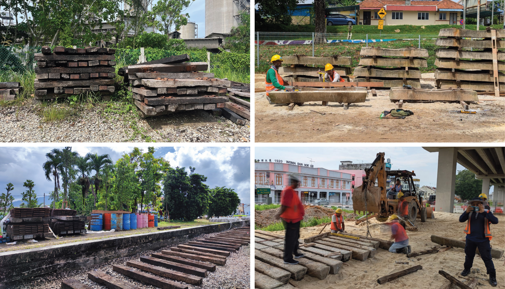
Event Platform
Event platform underneath viaduct constructed by railway concrete sleeper.
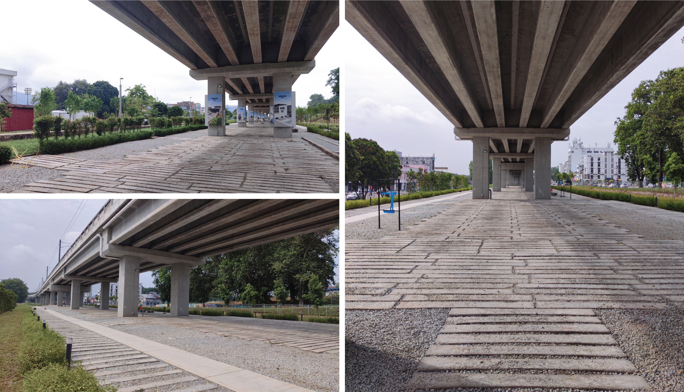
Congregation Point
Located at the junction point of the park with concrete sleeper lay in circle pattern to symbolize railway turntable
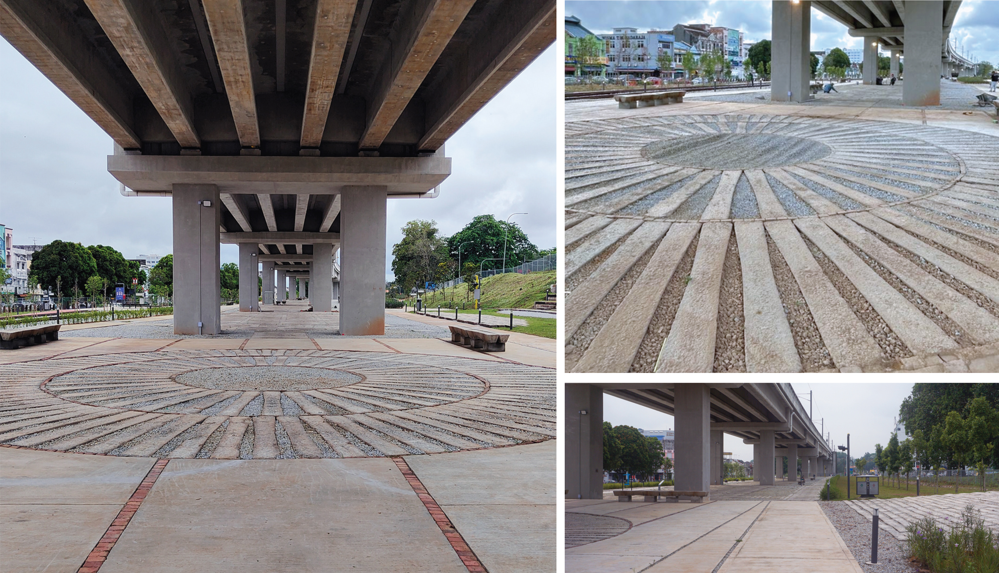
Railway Sleeper Bench
Concrete sleepers extend from the ground up to bench height, providing seating at various locations throughout the park and allowing users to engage with this railway historic element up close.
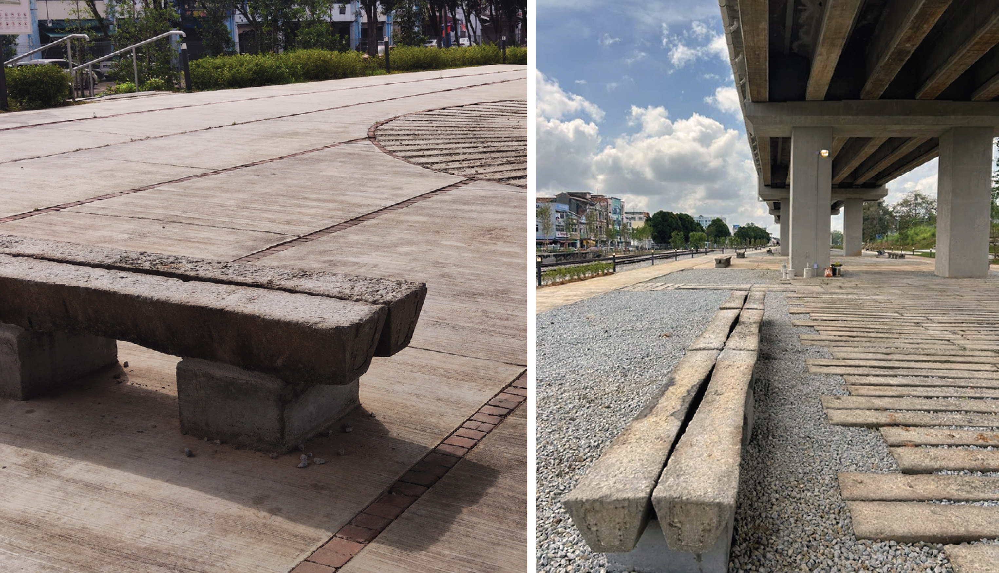
Amphitheatre
Concrete sleepers are arranged on the existing slope to form seating, creating an amphitheater for public use and introducing a new way of experiencing the park.
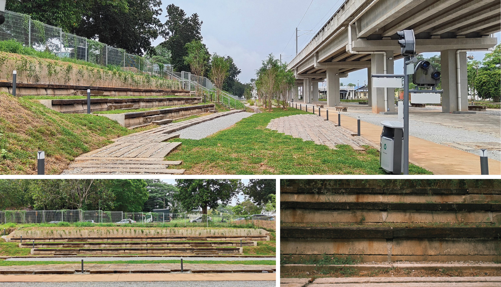
Staircase Access
Concrete sleepers can also be integrated into steeper slopes to form steps or staircases, connecting different levels within the park and providing access to entrances.
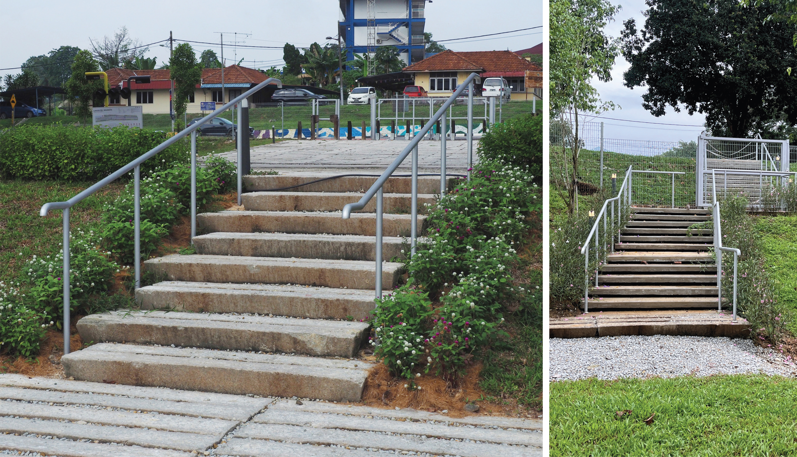
Road Maker
Timber sleepers are resized to appropriate dimensions and installed at varying intervals at each entrance, maintaining access for park service vehicles, while also forming wheelchair - accessible entry points and serving as individual removable road markers.
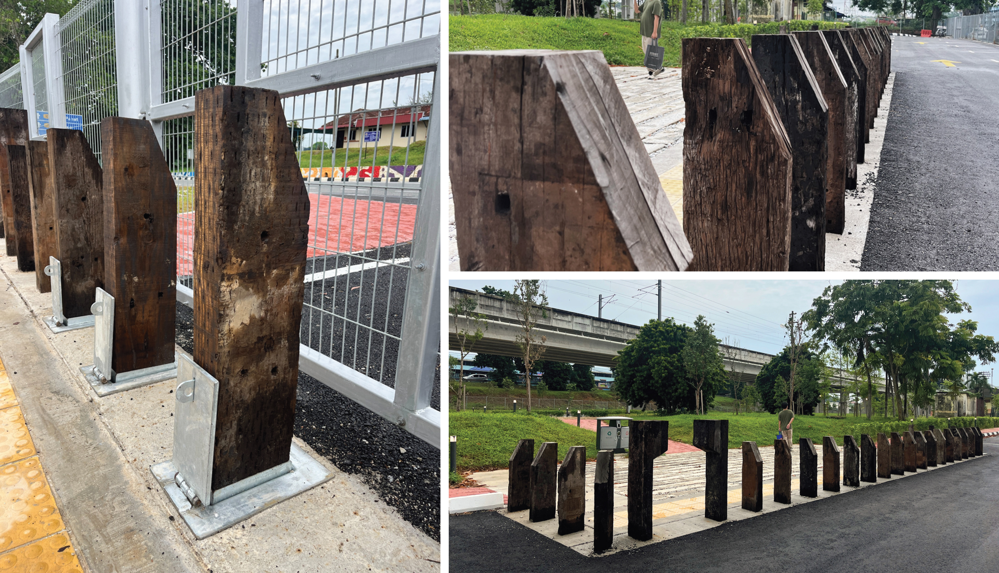
Railway Reclaimed Item
Interpretive and directional signage is constructed from reclaimed railway materials, extending the spirit and memory of the railway.
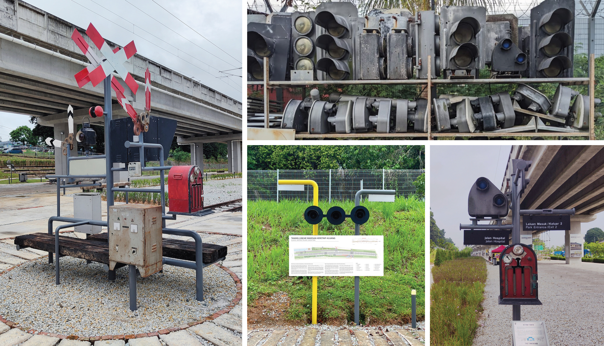
×